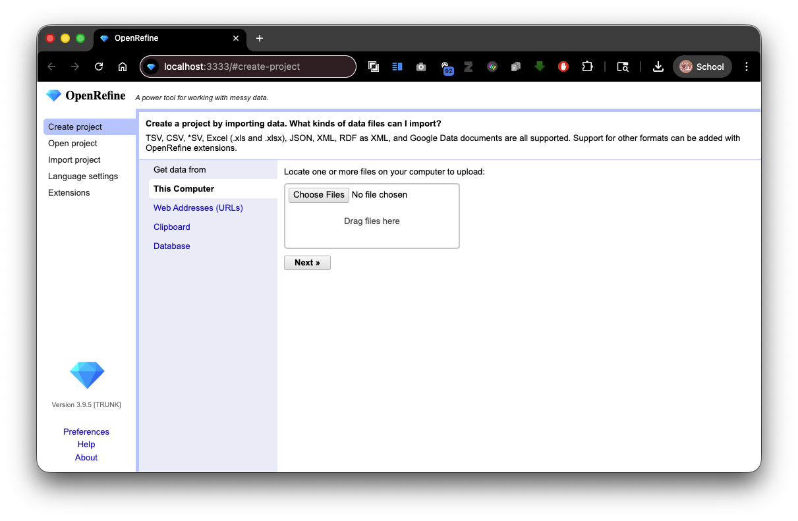
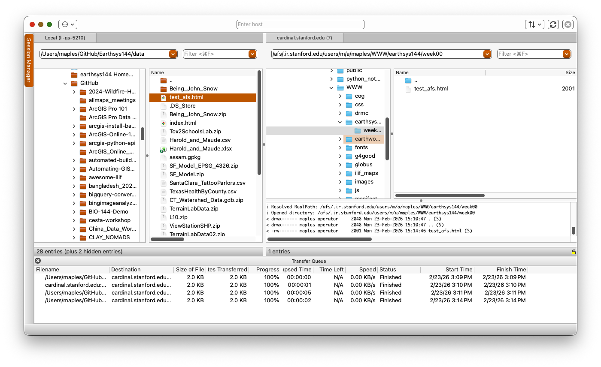

Logging Into Accounts and Installing Software
This guide covers setting up the various online accounts and installing essential software tools you'll need throughout the course.
Online Accounts Setup
GitHub
GitHub is a web-based platform for version control and collaborative code development. We'll use GitHub to:
- Host your web maps and interactive visualizations
- Collaborate on projects
- Access course materials and assignments
- Deploy websites and applications for free using GitHub Pages
Why GitHub for this course: GitHub is the industry standard for sharing code and data work. Learning to use it now is a valuable skill for any GIS or data science career. Plus, GitHub's free tier gives you plenty of space for hosting webmaps and experiments.
Getting Started:
- Navigate to github.com
- Click the Sign up button
- Create a free account using your Stanford email (SUNetID@stanford.edu)
- Using your Stanford email qualifies you for educational benefits
- Verify your email address
- Optional but recommended: Apply for the GitHub Student Developer Pack
- Provides free access to premium tools and services
- Requires verification of your Stanford student status
Testing Your Account:
Once created, log in and explore:
- Visit the course repository at github.com/mapninja/Earthsys144 to see examples of projects similar to ones you'll create
- Star the repository (click the star icon) to bookmark it
- Familiarize yourself with the interface
ArcGIS Online
ArcGIS Online is Esri's cloud-based mapping platform for creating interactive web maps and story maps.
Getting Started:
- Visit stanford.maps.arcgis.com
- Click Sign In
- Use your Stanford SUNetID and password
- Verify that you can access your profile and create a new web map
- Explore sample story maps and web applications in the gallery
Google Colab
Google Colab provides cloud-based Python notebook environments, perfect for working with geospatial libraries without installing complex software locally.
Getting Started:
- Navigate to colab.research.google.com
- Sign in using your Google account (or create one if you don't have one)
- Create a test notebook:
- Click New notebook
- Run a simple command to verify it works
- Example: Type
print("Hello from Google Colab!")and click the run button
- Bookmark this site for later use
Software Installation
OpenRefine
OpenRefine is an essential tool for data cleaning and transformation. It helps you clean messy data, fix inconsistencies, and prepare datasets for spatial analysis.
When you'd use it:
- Cleaning address data before geocoding
- Standardizing place names or category names
- Fixing inconsistent formatting in spreadsheets
- Detecting and removing duplicates
Installation:
- Visit openrefine.org
- Download the latest version for your operating system
- Extract the downloaded file to a location you can easily find
- Launch according to your OS:
- Mac: Double-click the OpenRefine icon
- Windows: Double-click
openrefine.exe
- OpenRefine will open in your web browser automatically at
localhost:3333

Usage Notes:
- OpenRefine runs as a local web application on your computer
- Keep the terminal/command window open while using OpenRefine (don't close it)
- Works with CSV, JSON, XML, TSV, and other structured data formats
- Your data stays on your computer—nothing is sent to external servers
- Keep a backup of your original data before using OpenRefine
Stanford AFS & SecureFX
Stanford's AFS (Andrew File System) provides free web hosting for students. You can place HTML, CSS, and JavaScript files on your AFS space and access web applications at: web.stanford.edu/~YOURSUNetID
Why use AFS web hosting:
- Free, permanent home for your projects
- Accessible from anywhere
- Good for hosting simple web maps and interactive visualizations
- Professional portfolio location
Stanford AFS Web Hosting Setup
- Visit uit.stanford.edu/service/web/centralhosting/howto_user to read the official Stanford documentation
- Your AFS space includes two main folders:
/WWW/- This is your public web directory (accessed at web.stanford.edu/~sunetid)/Private/- This is private storage
- Create a simple test file to verify your setup later
SecureFX: Upload Files to AFS
SecureFX is an SFTP (Secure File Transfer Protocol) client that lets you upload files from your computer to your AFS space. Think of it like a file transfer application.
Installation:
For Windows:
- Visit uit.stanford.edu/service/ess/scrt_sfx/securefx
- Download SecureFX for Windows
- Run the installer and use all default settings
For macOS:
- Visit uit.stanford.edu/service/ess/scrt_sfx/securefx/mac/install
- Follow the installation instructions for Mac

Configuring SecureFX to Connect to AFS:
- Launch SecureFX
- Click New Session or Quick Connect
- Enter these settings:
- Host Name:
cardinal.stanford.edu - Username: Your SUNetID (without @stanford.edu)
- Password: Your Stanford SUNetID password
- Port: 22 (for SFTP)
- Host Name:
- Click Connect
- You should see two folders:
PrivateandWWW - Navigate to the
WWWfolder - this is your public web space
Uploading Files to AFS:
- In the left panel, browse to a file on your computer
- In the right panel (AFS), navigate to the
WWWfolder - Drag and drop files from left to right to upload them
- Test your upload by visiting
web.stanford.edu/~YOURSUNETID/filename.htmlin your browser
Testing Your AFS Setup:
- Create a simple HTML file called
test_afs.htmlon your computer with this content:<!DOCTYPE html> <html> <head> <title>My AFS Test</title> </head> <body> <h1>Hello from AFS!</h1> <p>This file is hosted on Stanford's AFS system.</p> </body> </html> - Upload it to your WWW folder using SecureFX
- Visit
web.stanford.edu/~YOURSUNETID/test_afs.htmlin your browser to verify it works - You can also view the course test example
Text Editor
A good text editor is essential for writing code and editing web files. While you can use many tools, Visual Studio Code is recommended for its integration with the tools we'll use in this course.
Recommended Options:
Visual Studio Code (Recommended)
- Free and open-source
- Cross-platform (Windows, Mac, Linux)
- Excellent for code editing and file tree navigation
- Great plugin ecosystem for extensions
- Built-in terminal
- Good for HTML, CSS, JavaScript, Python, and more
-
- Free or paid version available
- Clean, minimal interface
- Good for those who find VS Code overwhelming
- Faster startup than VS Code
Notepad++ (Windows only)
- Free and lightweight
- Good for quick edits

Installation (VS Code Recommended):
- Visit code.visualstudio.com/download
- Download the appropriate version for your OS
- Install using default settings
- Launch and explore the interface
- Optional: Install useful extensions:
- Live Server (for testing HTML files locally)
- Python (if doing Python work)
- Prettier (for code formatting)
Verification Checklist
By the end of this guide, you should have:
- [ ] GitHub account created with Stanford email
- [ ] Able to log into ArcGIS Online with Stanford credentials
- [ ] Google Colab test notebook created and working
- [ ] OpenRefine installed and running
- [ ] SecureFX installed and configured for Stanford AFS
- [ ] Test file successfully uploaded to your AFS web space
- [ ] Text editor (VS Code) installed
- [ ] Able to access
web.stanford.edu/~YOURSUNETID/test_afs.htmlin your browser
Troubleshooting
Can't connect to AFS with SecureFX
- Verify your SUNetID and password are correct
- Make sure you're connecting to
cardinal.stanford.edu - Try updating SecureFX to the latest version
- Contact Stanford UIT if connection issues persist
GitHub account creation issues
- Make sure you're using a valid Stanford email address ending in @stanford.edu
- Check your email for a verification link
- Try using a different browser if having issues
OpenRefine won't start
- Make sure Java is installed on your computer
- Try right-clicking the application and running as administrator (Windows)
- Check that port 3333 is not blocked by your firewall
Can't see AFS folders in SecureFX
- Verify you successfully connected (check the status bar)
- Make sure you're in the home directory
- Try refreshing the file list (press F5)
Next Steps
Once you've completed all of these steps, you're ready to move on to learning specific tools and techniques. Keep your AFS web space active—you'll be using it throughout the course to host projects and webmaps!